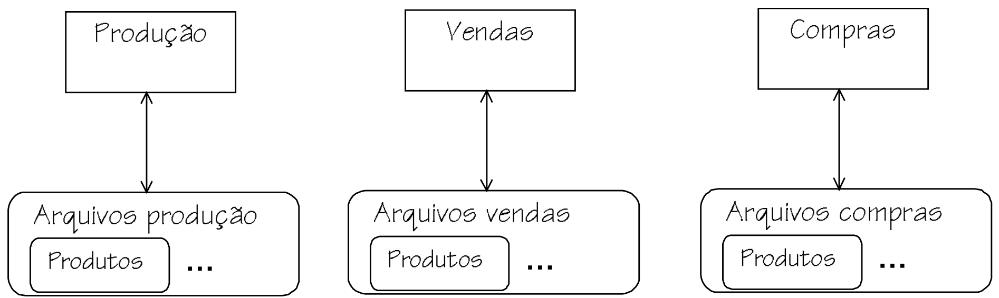
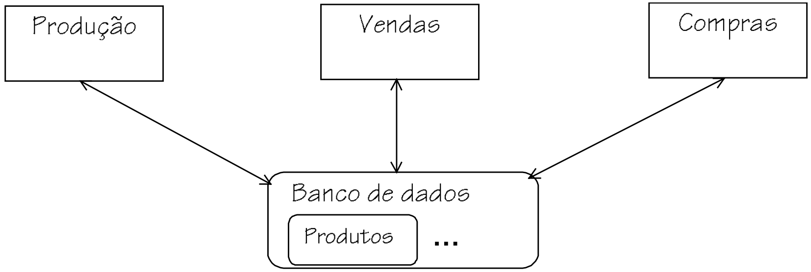
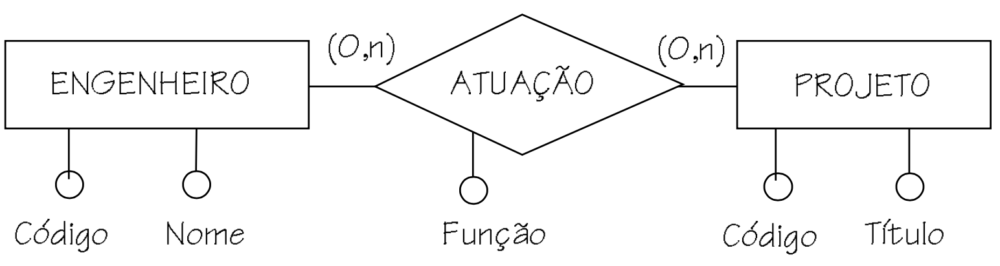
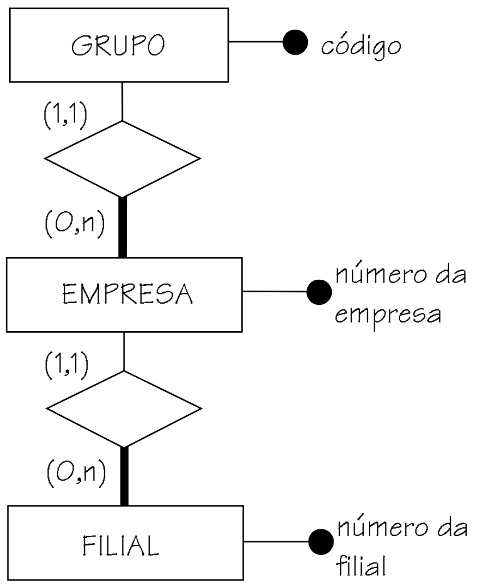
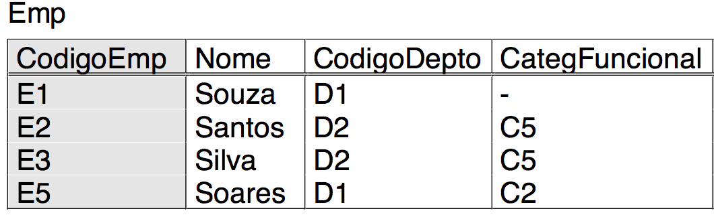
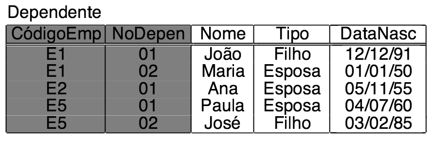
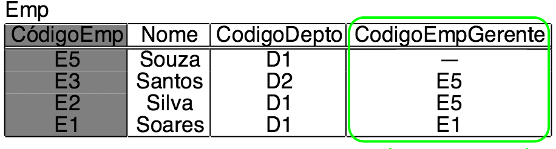

Banco de dados
João Eduardo Montandon
Desenvolvimento de Aplicativos Web - COLTEC/MG

Desenvolvimento de Aplicativos Web - COLTEC/MG
João Eduardo Montandon
Desenvolvimento de Aplicativos Web - COLTEC/MG
Imagine um sistema com três módulos principais: Produção, Vendas e Compras.
Qual o problema desse modelo??
Os dados do produto estão replicados em vários lugares
A redundância nem sempre é ruim!!
A solução para evitar a redundância não controlada está em fazer o compartilhamento de dados. Desta forma, a informação é armazenada apenas uma vez, e acessada de vários sistemas.
Ao conjunto de arquivos integrados que atendem vários módulos dá-se o nome de Banco de Dados.
Banco de Dados: Conjunto de dados integrados que tem por objetivo atender a uma comunidade de usuários.
Para dar suporte ao compartilhamento de dados, os sistemas -- e consequentemente sua estrutura -- se tornaram mais complexos, pois passaram a oferecer suporte a mecanismos de multiacesso, concorrência, etc.
Para auxiliar na manipulação dos dados em uma aplicação multiusuário, utilizamos um sistema específico, denominado Sistema de Gerência de Banco de Dados (SGBD).
Sistemas Gerenciadores de Banco de Dados: software que incorpora funções de definição, recuperação e alteração de dados em um banco de dados.
Permite a clara separação de manipulação dos dados e processamento do programa.
Aumenta produtividade, escalabilidade, modularização, etc.
Existem vários tipos de SGBDs:
Ao definir um banco de dados, precisamos descrever como os dados serão representados.
Geralmente os dados são descritos por meio de modelos, denominado modelo de dados.
Os modelos podem ser mais ou menos detalhistas, gráficos ou textuais, a depender do nível de abstração do modelo.
Existem vários modelos definidos na literatura. Dois modelos são mais utilizados:
Modelo que descreve a estrutura de dados de forma independente do SGBD.
Registra os dados que serão armazenados e a relação entre si.
Técnica mais utilizada: Diagramas Entidade-Relacionamento (DER)
Modelo de dados visualizado pelo usuário do SGBD.
Os dados são organizados de acordo com o SGBD que está sendo utilizado. Logo a modelagem e dependente do SGBD.
Em nosso caso, iremos trabalhar com SGBDs relacionais. Em um SGBD relacional, os dados são visualizado na forma de registros/tabelas.
Logo, os dados serão modelados em um formato de tabela.
TipoDeProduto(CodTipoProd,DescrTipoProd)
| CodTipoProd | DescrTipoProd |
| 1 | Computador |
| 2 | Impressora |
Produto(CodProd,DescrProd,PrecoProd,CodTipoProd)
CodTipoProd referencia TipoDeProduto
| CodProd | DescrProd | PrecoProd | CodTipoProd |
| 1 | PC notebook Dell | 2.500 | 1 |
| 2 | Macbook 2010 | 1.800 | 1 |
| 3 | Impressora HP | 650 | 2 |
Contém detalhes de armazenamento interno de informações, relacionados principalmente ao desempenho de aplicações de banco de dados.
Modelo utilizados por profissionais que fazem tuning de banco de dados.
Como obter as informações necessárias para modelar o banco de dados da aplicação?
Através da identificação das entidades, é possível representar os dados que irão compor o Banco de Dados.
Um projeto de banco de dados geralmente ocorre em duas fases:
Caso deseja migrar um banco de dados antigo, devemos aplicar engenharia reversa de forma a obter o modelo conceitual da estrutura antiga, e então gerar o novo modelo lógico com base nessa estrutura.
Desenvolvimento de Aplicativos Web - COLTEC/MG
João Eduardo Montandon
Desenvolvimento de Aplicativos Web - COLTEC/MG
A primeira etapa em um projeto de BD é a construção do modelo conceitual.
Objetivo: Obter uma descrição independente de plataforma dos dados que serão armazenados.
Técnica mais utilizada: Abordagem Entidade-Relacionamento.
Composta por um modelo de dados, denominado modelo entidade-relacionamento (MER). Todo MER pode ser representado graficamente e textualmente.
Um MER é representado graficamente por meio de um diagrama entidade-relacionamento (DER).
Conceitos centrais do modelo ER:
Conjunto de objetos sobre os quais deseja-se manter informações no banco de dados.
Podem representar objetos abstratos ou reais.
Uma entidade representa a especificação de um objeto
Um objeto específico da entidade pode ser referido como instância ou ocorrência.
São representadas por meio de um retângulo.
Entidades por si só representam pouco para o sistema
É necessário atribuir algumas propriedades às entidades:
Conjunto de relações entre as entidades
Representado por meio de um losango
Assim como acontece com as entidades, os relacionamentos também podem ter ocorrências.
Neste caso, cada ocorrência mostra uma relação entre as entidades da relação.
Nem sempre um relacionamento se refere a entidades diferentes. Quando um relacionamento se refere a mesma entidade, o denominamos como auto-relacionamento
Quando houver um auto-relacionamento entre as entidades, devemos declarar o papel que a entidade exerce sobre o relacionamento.
Saber da grandeza de relação entre as entidades é extremamente importante. O MER permite definir o número de ocorrências associadas ao relacionamento.
Essa propriedade é denominada cardinalidade.
Há dois tipos de cardinalidades: Máxima e mínima.
Define o número máximo de ocorrências associadas entre si por meio de um relacionamento.
Há dois valores para cardinalidade máxima:
1 No máximo uma ocorrência da entidade relacionadaN Máximo N ocorrências da entidade relacionadaA cardinalidade máxima pode ser usada para classificar relacionamentos binários.
Relacionamentos clássicos:
N:N muitos-para-muitos1:N um-para-muitos1:1 um-para-umDefine o número mínimo de ocorrências associadas entre si por meio de um relacionamento.
Consideradas duas cardinalidades:
Dado ou informação que é associado a cada ocorrência de uma entidade ou relacionamento.
Atributos também possuem cardinalidade. Por padrão os atributos possuem cardinalidade (1,1).
1 Obrigatório0 Opcional1 mono-valoradoN multi-valoradoRelacionamentos também podem possuir atributos próprios.
Cada entidade deve possuir um código que identifique unicamente suas ocorrências.
Identificador: Conjunto de propridades de uma entidade cujo valores tornam única suas ocorrências.
Há casos onde o identificador de uma entidade é composto também por relacionamentos dos quais a entidade participa. Neste caso, denominamos como relacionamento identificador.
Neste caso, nos referimos a entidade dependente como entidade fraca.

Conceito que permite atribuir propriedades particulares a um subconjunto de ocorrências especializadas de uma entidade genérica.
Representada no diagrama por um triângulo isóceles.
A entidade especializada herda todos os atributos da entidade genérica, inclusive o identificador.
Permite herança múltipla, porém desde que os pais da entidade pertençam a mesma entidade genérica.
As generações/especializações podem ser classificadas em dois tipos: total parcial
Existem situações onde é necessário criar uma relação entre entidade e seu relacionamento.
Suponha que desejamos modificar o diagrama abaixo para adicionar informação de quais medicamentos foram prescritos em cada consulta.
"Com qual entidade a entidade MEDICAMENTO deve se relacionar?"
Se MEDICAMENTO se relacionar a MEDICO, perdemos a informação do paciente.
Se MEDICAMENTO se relacionar a PACIENTE, perde-se a informação do médico.
Desenvolvimento de Aplicativos Web - COLTEC/MG
João Eduardo Montandon
Desenvolvimento de Aplicativos Web - COLTEC/MG
Abordagem relacional: Modelagem de dados utilizada nos SGBDs do tipo relacional.
Modelagem em nível lógico (específica por SGBD).
Proposta em 1970. Desde então, padrão de modelagem de dados da indústria de TI.
A abordagem relacional gira em torno de quatro conceitos fundamentais:
Um banco de dados relacional é composto por uma coleção de entidades, representadas por tabelas.
Cada tabela possui uma ou mais tuplas (linhas), que representam "instâncias" daquela tabela.
Uma tabela é formada por um conjunto de colunas denominadas atributos.
Cada coluna possui um tipo associado, denominado domínio.
Representa as entidades do seu sistema. Possui papel central na modelagem relacional.
Composta por um conjunto não ordenado de linhas, que por sua vez é composta por vários campos.
Cada campo pertence necessáriamente a uma coluna, que define as propriedades daquele campo.
De acordo com o modelo relacional, as tabelas possuem as seguintes propriedades:
Conceito usado para especificar restrições de integridade básicas de um SGBD relacional.
Possui três tipos:
Chave Primária: Coluna ou uma combinação de colunas cujos valores distinguem uma linha das demais dentro de uma tabela.
Pode ser simples ou composta (uma ou mais colunas).
Deve ser mínima.


Chave Estrangeira: Coluna ou uma combinação de colunas, cujos valores aparecem necessariamente na chave primária de uma tabela
Permite a relação entre tabelas em um banco de dados relacional.
A utilização de chaves estrangeiras impõe diversas restrições que são verificadas automaticamente pelo banco de dados quando seus dados sofrem alterações.
Tais restrições ajudam a manter a integridade dos dados armazenados pelo banco de dados.
Apesar do termo "estrangeiro", uma chave estrangeira pode referenciar a chave primária da própria tabela.
Mais de uma coluna ou combinações de colunas podem servir para distinguir uma linha das demais.
Uma das colunas (ou combinação de colunas) é escolhida como chave primária.
As demais colunas ou combinações são denominada chaves alternativas.
Conjunto de valores que podem aparecer em uma coluna. Em outras palavras, define o tipo de dados das colunas.
O próprio banco de dados possui uma série de tipos que são utilizados para definir o domínio da coluna, tais como inteiros, strings, reais, binários, booleanos, etc.
NULL
Um valor de campo pode admitir um valor vazio. Nesse caso ele é representado por NULL.
NULL não é permitidoNULL é permitidoQuais colunas de uma tabela devem ser obrigatórias??
O objetivo primordial de um SGBD é garantir a integridade de seus dados.
Para isso, os SGBDs oferecem uma série de mecanismos que preveêm a especificação de restrições de integridade de dados.
Restrição de integridade: Regra de consistência de dados que é garantidade pelo próprio SGBD.
São garantidas pelo próprio SGBD por padrão, através de uma especificação declarativa.
O desenvolvedor não precisa implementar procedimentos para garantir tais restrições
Restrições que são específicas do sistema que está sendo implementado.
Exemplo: Um empregado não pode ter um salário maior que seu superior imediato.
Essas regras podem ser implementadas a nível do banco de dados, porém NÃO são recomendadas.
Um esquema de banco de dados relacional deve conter no mínimo:
jogador (jog_cod, jog_nome, jog_data_nascimento, jog_salario)
tecnico (tec_cod, tec_nome, jog_cod)
jog_cod referencia jogador
escalacao (esc_cod, jog_cod, esc_data)
jog_cod referencia jogador
clube (clud_cod, clu_nome, tec_cod)
tec_cod referencia tecnico
contrato (jog_cod, clu_cod)
jog_cod referencia jogador
clube_cod referencia clube
partida (par_cod, clu_cod_casa, clu_cod_visitante, est_cod, par_data)
clu_cod_casa referencia clube
clu_cod_visitante referencia clube
est_cod referencia estadio
estadio (est_cod, est_nome, est_capacidade)
HEUSER, Carlos A.; Projeto de Banco de Dados; 6a Edição; Porto Alegre, 2008.